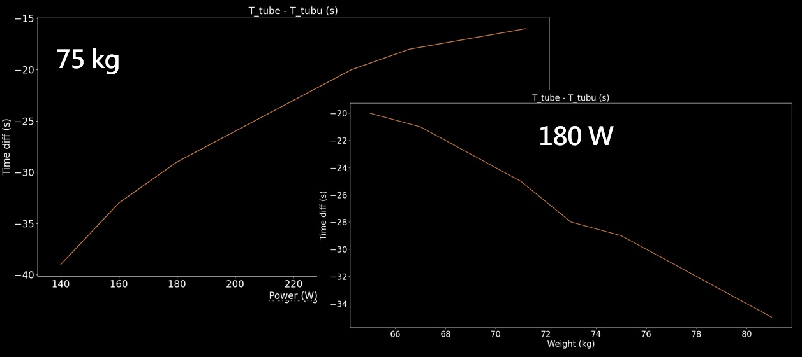
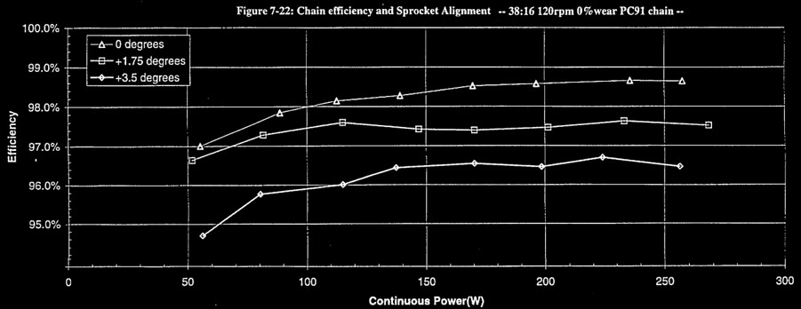
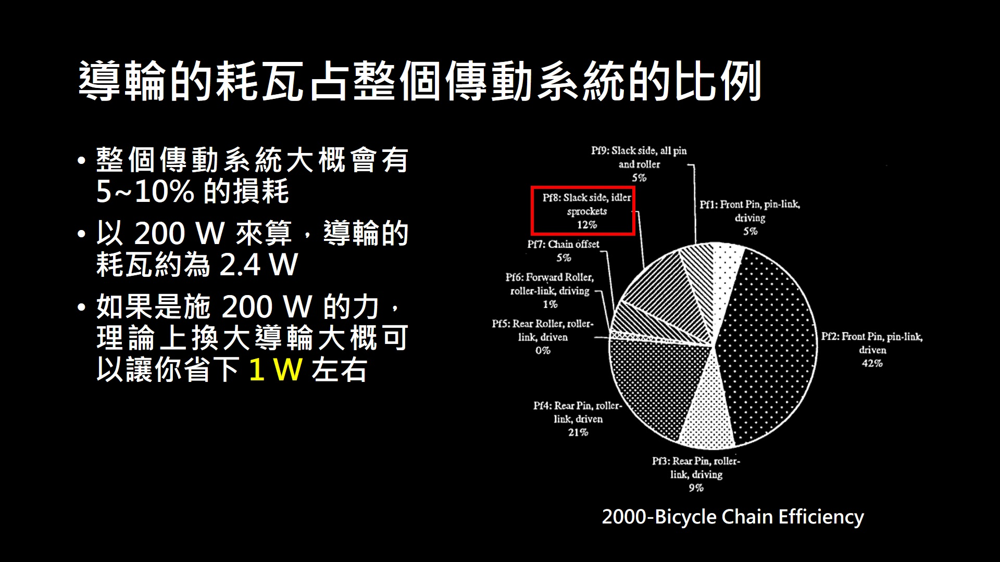
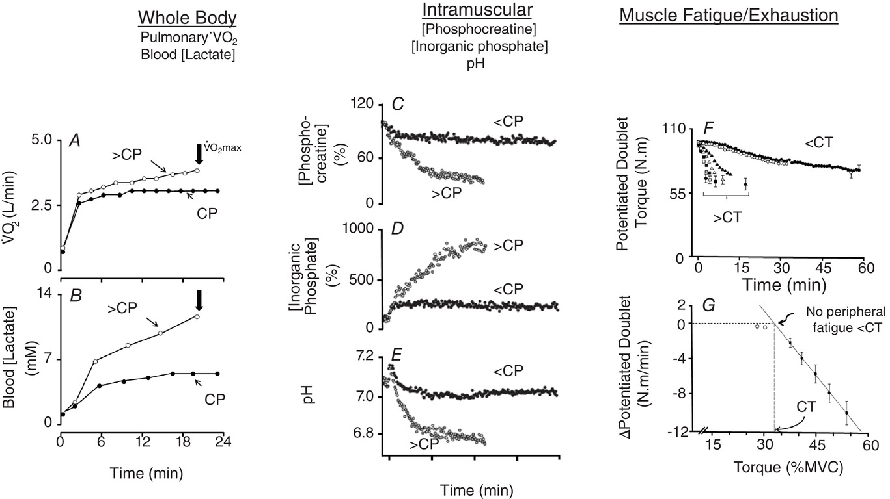
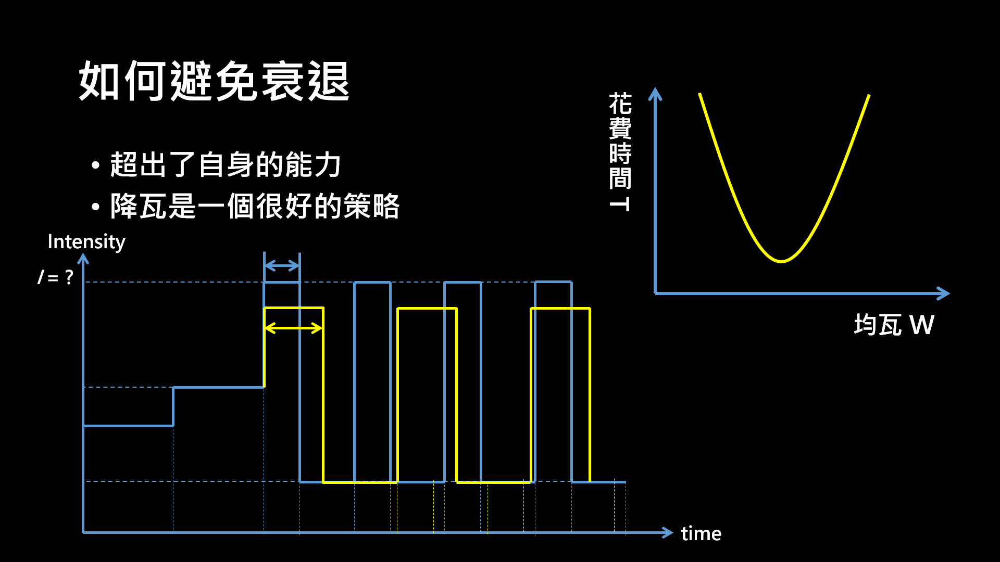
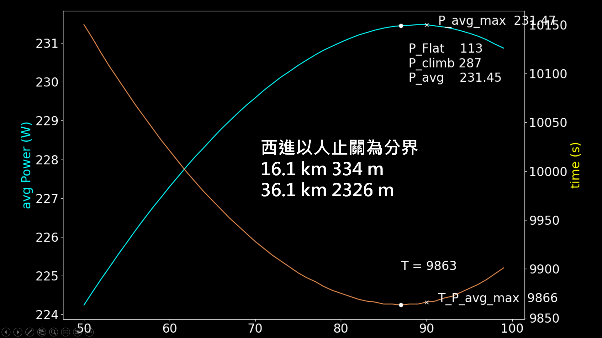

爬武嶺輕量化阻力不一定比較少，如何避免爬長坡的衰退與配瓦
說到爬坡要變快大家一定會先想到輕量化，因為這個只要靠鈔票就能夠達成目的，錢能解決的問題就都不是問題。不過爬坡也不是只要抵抗重力，還有很多阻力需要去對抗，雖然說爬坡速度不快但還是有風阻，而騎乘時輪胎與地面也是會有滾阻，當然傳動系統間也是會有阻力的。當人人有功練，人人有訓練台，且運動科學又再深入研究，大家也騎得越來越快，爬坡風阻也變得顯著。但是空力裝備通常都比較重，而以前大家也會去用管胎，但現在大環賽全都改用無內胎了，無內胎重量也是比管胎重不少，最後就是傳動系統間的摩擦阻力，像是雙盤比單盤重也還沒有很多人用，而大導輪也是比一般的重大家也是換了，所以就要來看看爬坡輕量是不是真的會快。首先我們先來看看空力裝備，空力裝備近幾年在大環賽幾乎是標配了，像是空力帽、連身服、高框輪與空力車架，即便在大山站也是相同裝備下去比，而且大環賽很少只有爬坡的路段，通常也會有下坡跟部份平路。像最近的 Y1RS 就比 V4RS 重很多，也看得出來 colnago 對於空力的重視，不過反正 pro 們騎得快所以很重要，一般人騎的沒那麼快爬坡車架可能還有效益，所以這也不會是我想討論的重點，重點是傳動系統跟內外胎的使用。
一、內外胎系統
首先我們先來看內外胎系統，內外胎除了輕量外還要去討論滾阻，剛好最輕量的滾阻最大，管胎除了外胎本身就輕以外，因為是直接黏在輪框上所以輪框也較輕，但也因為是用黏的，所以輪胎內部也有很大的阻力，而無內胎雖然沒有內胎但要灌補胎液，所以整體來說會比有內胎還要再重，但也因為內部是液體，騎乘時會甩到胎壁上，所以與輪框間的摩擦力就非常的小。
當然無內胎的補胎液可以用輕量化內胎取代。但是輕量化內胎就是內胎變得很薄，而且通常爆胎的話就是一定要停下來換胎，所以我個人還是寧願使用無內胎或管胎。那就這兩個系統可以來比較看看，這邊假設管胎輪組整體比無內胎輕 300 g，但是滾阻多 5 W 下去做計算
|  |
|---|
| 圖一：管胎與無內胎爬武嶺的比現 |
算出來爬武嶺只要總重量超過 65 公斤，都是無內胎會比較快 畢竟管胎滾阻真的很大，所以輕量的效益是無法高過滾阻的增加，這就是其中一個重量比較重但爬坡較快的例子。
二、單盤或雙盤
在來看一下最近越來越紅的單盤系統，單盤系統少了一個齒盤、前變、變把也變簡潔，但是就需要用較大顆的飛輪，不過整體重量還是比雙盤輕了快 100 g，而單盤因為鏈條整體會比較斜，所以在傳動效率上會比雙盤還要差一些。當然這也是看你的後飛輪配得好不好，如果大部分的路段都是用中間的飛輪，那麼整體來說就是有從減重得到效益，但若很多時候用到最大或最小，那還不如去用雙盤效益會比較高。
|  |
|---|
| 圖二：鍊條斜度的影響 |
三、大導輪
再來就是看現在幾乎是標配的大導輪，以一個乾淨的傳動系統來說，騎乘時大概會耗掉 5~7% 的瓦數，所以普通人大概會有 10 W 左右的損耗，那麼就導輪而言大概佔了 10W 的 10%，所以整體來說大概可以讓你少 1~2 W。
|  |
|---|
| 圖三：導輪的耗瓦佔整個傳動系統的比例 |
Ceramic speed 的宣稱是你用他們整套方案，才可以省到 6 W 這麼多 單換大導輪是沒辦法的，當然大導輪一定也是比一般導輪重的，普通導輪大約是 11 齒，大導輪則是 15~17 齒，重量上大約會重個 50g 左右，如果需要換鍊條可能還要再多個 5~10 g，所以一定是會讓爬坡更難爬的，那為什麼還是有許多人說換了更好爬呢，因為這點重量的增加只會讓你多花 0.1 W，整體來說還是換大導輪的效益比較高。新款的 RED 目前也是標配大導輪，之後就看看 SHIMANO 會不會跟上，大導輪就是一個雖然更重但讓爬坡更快的例子。所以爬坡輕量會到底會不會讓你爬更快，主要還是要看輕量化的效益到底多大，如果只是單純地升到高階產品，例如 105 的飛輪換成 DA 的，這個肯定是會讓你爬得更快。但如果是高框輪換成低框，或是無內胎換管胎 都有可能是變輕但變慢，還需要去看輕量化到帶來的阻力增加，兩者權衡之後才知道是否能更快。
四、避免衰退
首先我們先來看當人體對外做功時的生理反應，在運動科學中比較常講 Critical power，對於這方面的論文也比較多，所以我就從 CP 的理論跟性質下手，當然跟 FTP 也是差不多的。CP 可以看作是一個最大穩太乳酸的瓦數，超過這個瓦數乳酸就會快速累積，在肌肉內部的磷酸肌酸也會快速降低，人體內的酸鹼值也會稍微偏向酸但不會偏很多，而在肌肉疲勞的部分也會快速增加，注意到我這邊是用快速，在瓦數輸出小於 CP 時肌肉疲勞也會慢慢增加，這個是生理反應，有興趣的可以去翻翻論文。
|  |
|---|
| 圖四：超過 CP 時的生理反應 [2] |
所以根據前面的說法，降瓦騎就是個很好的，避免衰退的方式，只是時間會花的比較多而已，所以像在做 HIIT 的時候就有這個現象，瓦數高時持續時間就短、瓦數低就長，這也是身體的一種保護機制，不然一直高強度的輸出身體也無法負荷，那麼對於一路段來說，如果 200 W 沒辦法撐完，那可以降到 100 W 騎，維持此瓦數完成的機率就大增。
|  |
|---|
| 圖五：降瓦避免衰退 |
五、如何配速
但是在比賽時希望的是可以有個最高撐完的瓦數，這樣通常時間是最短的，所以對於不同的人來說，騎同一個路段，會有一個最短時間的配瓦，如果一開始瓦數太高，那後面就衰退嚴重，說白話點就是爆掉，後面就只能牽車。當然爆掉這現象不是只有爬山才會，平路也會衰退，極端的例子就是在騎北高或雙塔時一直拉間歇，那很快就爆掉，這其實也是一種衰退，所以衰退的原因主要是超出了自身的能力，至於高山空氣稀薄什麼的並不是主要因素，當然這也有可能會降低本身的表現，所以降瓦就是個很好的策略。
表一：相同路段不同配瓦的時間花費
| 第一段 | 10 km | 第二段 | 10 km | ||||
|---|---|---|---|---|---|---|---|
| 配瓦 (W) | 250 | 300 | 350 | 350 | 300 | 250 | |
| 費時 (s) | 914 | 857 | 812 | 789 | 830 | 888 | |
| 時間差 (s) | 0 | -57 | -102 | 0 | +41 | +53 |
| 配瓦 (W) | 250, 350 | 300, 300 | 350, 250 |
| 費時 (s) | 1703 | 1687 | 1695 |
| 時間差 (s) | +16 | 0 | +8 |
可以看到上表用不同的配瓦騎同一路段就有不同的完賽時間。當然這路段主要還是爬坡為主，通常以人止關為分界，因為前面是長平路，後面就是長爬坡了，而且平均坡度有 5%，那麼來看一下要如何配瓦會最快，可以看到要在爬坡路段維持高瓦數，所花的時間會比較短 而且還短不少。當然這不是要告訴你爬坡瓦數盡量開，因為瓦數再高這段在一般市民也要騎兩小時，這是要告訴你在騎西進武嶺的這路段，前面的人止關真的不要急，因為是一開始，很多人以為自己很行，結果到了最高小七甚至清境就不行了，而且在那段爆衝，換來的就是在後段爆掉，所以想破 PR 還不如找認識的人去輪車，才不會被其他人搞掉。
|  |
|---|
| 圖六：某個配瓦下武嶺的最短時間 |
不過這計算很複雜，建議還是一個瓦數騎到底就好，可以用我網站的計算機來計算。
路段表現預估